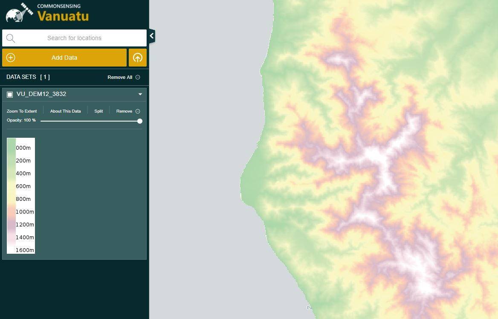
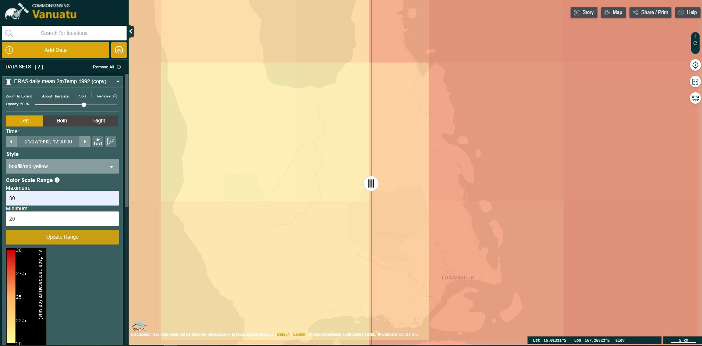
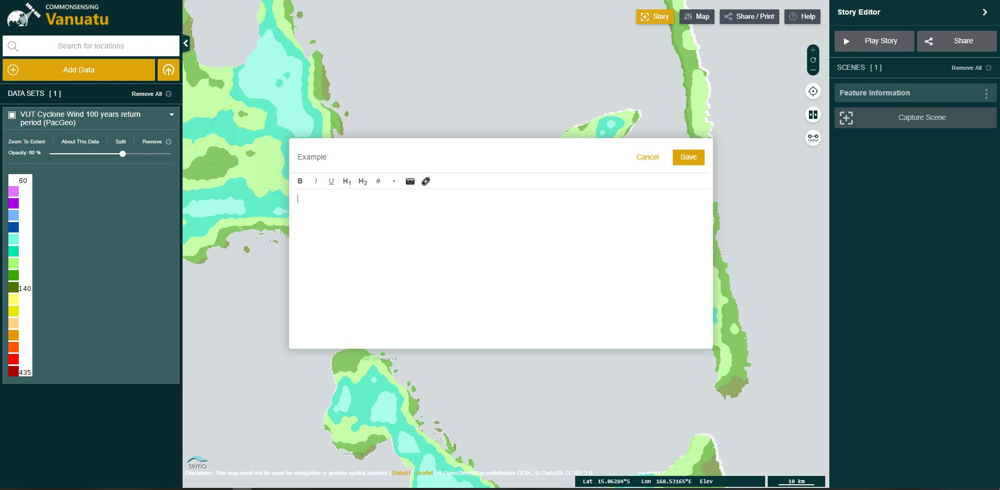

Select Explore data in the left-hand panel to open the catalogue.
You can select single datasets to see a preview, description, and other relevant information.
Select Add to the map to view that dataset. The spatial data will be displayed in the map
view, a visual legend and more options will appear in the Data workbench, on the left-hand side of the page.
The Data workbench offers various functionalities. You can:
Zoom to the geographical extent of a dataset
Visualise more information about the dataset
Split the visualisation, to compare two datasets (see below for more information)
Export the dataset
Remove data sets from the map
Set the order data is shown on the map by dragging the dataset title up or down
Toggle the visibility of datasets
Set the opacity of a dataset

Additional options for Climate datasets:
For Climate datasets, you can also update the range of data shown on the map through the Color Scale Range
functionality. This is useful either to analyse in more detail data from smaller areas of interest, or to
visualise specific ranges e.g. extreme temperatures or heavy rainfall values.
You can also change the styling through the Style drop down button.
It is also possible to navigate through the data using the timeline on the bottom of the screen.
To find out more information on data shown on the map, you can click on the relevant feature and it will
display the information available in the Feature Information window. It is possible to download the data in in
CSV or JSON format.
Additional options for Climate datasets:
For the Climate datasets it is possible to visualise the data in chart form too. You can download the chart
by clicking on the Download text on the top right.
The Splitter functionality allows you to compare a dataset for different time periods. To use it:
Select a dataset from the catalogue to add it to the map.
Select Split in the workbench to create a copy of the selected data.
Using the date picker, select different times for the two datasets.
Drag the splitter on the screen to view the differences.

You can also use the splitter with two entirely different datasets. To do so, just click on the side-by-side
comparison button on the right hand side of the map.
This video demonstrates the functionality more in detail.
Data stories are made up of interactive map scenes that the user can annotate with further content such as
text, links and pictures. They are an easy-to-use tool that helps showcase spatial data in context. You can
create one by clicking on the Story button on the top right of the map.

This video provides a quick tutorial on how to use the data stories functionality.